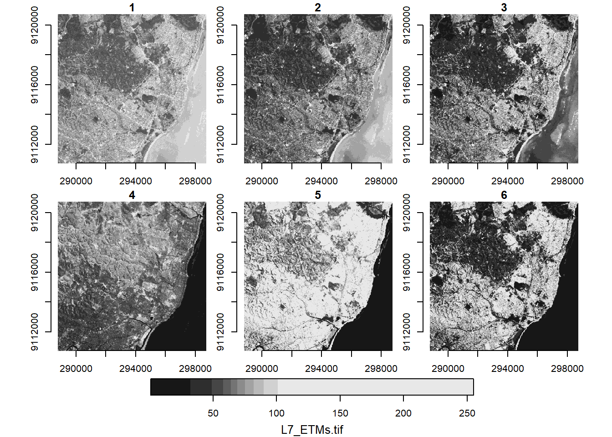

3 Raster data
As geoscientists, it is very likely that the majority of data we work with is in raster format. In this section, we will look at how to read raster data into R, how to perform raster/vector operations and basic usage of data cubes.
We need the packages below, where stars (Pebesma 2023b) and terra (R. J. Hijmans 2024) are the workforces to handle raster datasets in R.
We load sf for raster/vector interaction, ggplot2, tmap and units for visualisation.
library(sf) # vector spatial data classes and functions
library(terra) # raster spatial data classes and functions
library(tmap) # noninteractive and interactive maps
library(stars) # spatiotemporal arrays classes and functions
library(ggplot2) # non-spatial and spatial plotting
library(units) # units conversions3.1 Raster-vector operations
We use here datasets from the spDataLarge package. Similar to spData this is a data package. The data consists of terrain derivatives and a set of landslide locations in Ecuador. The data is used for landslide susceptibility assessment.
We call two vector datasets, lsl and study_mask first. We convert lsl into an sf object with sf::st_as_sf().
data("lsl", "study_mask", package = "spDataLarge")
landslides = st_as_sf(
lsl,
coords = c("x", "y"),
crs = "EPSG:32717"
)As for the raster data, we use terra::rast() in this case. We call the data from its location on file for this using system.file().
terrain = rast(system.file("raster/ta.tif", package = "spDataLarge"))
terrainclass : SpatRaster
dimensions : 415, 383, 5 (nrow, ncol, nlyr)
resolution : 10, 10 (x, y)
extent : 711962.7, 715792.7, 9556862, 9561012 (xmin, xmax, ymin, ymax)
coord. ref. : WGS 84 / UTM zone 17S (EPSG:32717)
source : ta.tif
names : slope, cplan, cprof, elev, log10_carea
min values : 0.00000, -25.697536, -0.3194027, 1711.204, 2.000000
max values : 76.17377, 4.267366, 0.1368342, 3164.165, 5.733915 3.1.1 Masking
Now, the first operation we apply to this raster data is a mask. We use the study_mask object we loaded above to crop our data to a polygon.
terrain = mask(terrain, study_mask)Let’s take a first glance of our data using tmap. Here we plot the terrain derivatives and the landslide points in separate subplots.
tm_shape(terrain) +
tm_raster(
col.scale = tm_scale_continuous(midpoint = NA),
col.legend = tm_legend(orientation = "landscape")
) +
tm_facets_hstack() +
tm_shape(landslides) +
tm_dots() 3.1.2 Extraction
Another common operation is to extract raster values at point locations. We can easily do this using terra::extract().
head(terra::extract(terrain, landslides)) ID slope cplan cprof elev log10_carea
1 1 33.75185 0.023180449 0.003193061 2422.810 2.784319
2 2 39.40821 -0.038638908 -0.017187813 2051.771 4.146012
3 3 37.45409 -0.013329108 0.009671087 1957.832 3.643556
4 4 31.49607 0.040931452 0.005888638 1968.621 2.268703
5 5 44.07456 0.009686948 0.005149810 3007.774 3.003426
6 6 29.85981 -0.009047707 -0.005738329 1736.887 3.174073We did not save the result of this since the landslides object already has the corresponding columns.
landslidesSimple feature collection with 350 features and 6 fields
Geometry type: POINT
Dimension: XY
Bounding box: xmin: 712197.7 ymin: 9556947 xmax: 715737.7 ymax: 9560807
Projected CRS: WGS 84 / UTM zone 17S
First 10 features:
lslpts slope cplan cprof elev log10_carea
1 FALSE 33.75185 0.023180449 0.003193061 2422.810 2.784319
2 FALSE 39.40821 -0.038638908 -0.017187813 2051.771 4.146013
3 FALSE 37.45409 -0.013329108 0.009671087 1957.832 3.643556
4 FALSE 31.49607 0.040931452 0.005888638 1968.621 2.268703
5 FALSE 44.07456 0.009686948 0.005149810 3007.774 3.003426
6 FALSE 29.85981 -0.009047707 -0.005738329 1736.887 3.174073
7 FALSE 31.57465 0.055624146 0.021838507 2583.551 2.251919
8 FALSE 53.42223 0.005728012 0.001018965 2522.235 2.583303
9 FALSE 32.60400 0.024040293 -0.016939975 1929.097 2.836454
10 FALSE 37.45409 -0.013329108 0.009671087 1957.832 3.643556
geometry
1 POINT (713887.7 9558537)
2 POINT (712787.7 9558917)
3 POINT (713407.7 9560307)
4 POINT (714887.7 9560237)
5 POINT (715247.7 9557117)
6 POINT (714927.7 9560777)
7 POINT (714287.7 9558367)
8 POINT (714147.7 9558467)
9 POINT (713717.7 9560657)
10 POINT (713407.7 9560307)If you use the {tidyverse} and would like to include {terra} to your workflows, take a look at {tidyterra}. The package allows you to plot {terra} objects with {ggplot2} too!
3.1.3 Predictions
Once we have extracted the data from the terrain derivatives at the landslide point locations, we can proceed to create a generalized linear model (GLM)
fit = glm(lslpts ~ slope + cplan + cprof + elev + log10_carea,
family = binomial(), data = landslides)And next we can use the terra::predict() function to apply the model to our terrain data.
pred = predict(terrain, model = fit, type = "response")Code
tm_shape(pred) +
tm_raster(
col.scale = tm_scale_continuous(midpoint = NA, values = "-viridis"),
col.legend = tm_legend(
title = "",
position = tm_pos_in("left", "bottom"),
width = 10,
frame = FALSE,
orientation = "landscape"
)
) +
tm_title("Landslide susceptibility") For the full example on landslide susceptibility, visit the Statistical learning chapter in Geocomputation with R.
For the full example on landslide susceptibility, visit the Statistical learning chapter in Geocomputation with R.
3.2 Data cubes
Data cubes are data structures that have become popular to organise and analyse raster data in particular. You may have heard of Earth observation (EO) data cubes. This are usually data structures that organise satellite imagery and other type of EO data in cubes with multiple dimensions, most specifically the x/y coordinates, time, and bands.
 Learn more about data cubes in the Data cubes chapter in Spatial Data Science.
Learn more about data cubes in the Data cubes chapter in Spatial Data Science.
3.2.1 Satellite imagery
In R, the stars package is designed to handle spatiotemporal arrays. We take a look at their example data, a Landsat-7 scene, read into R using stars::read_stars().
tif = system.file("tif/L7_ETMs.tif", package = "stars")
l7 = read_stars(tif)
l7stars object with 3 dimensions and 1 attribute
attribute(s):
Min. 1st Qu. Median Mean 3rd Qu. Max.
L7_ETMs.tif 1 54 69 68.91242 86 255
dimension(s):
from to offset delta refsys point x/y
x 1 349 288776 28.5 SIRGAS 2000 / UTM zone 25S FALSE [x]
y 1 352 9120761 -28.5 SIRGAS 2000 / UTM zone 25S FALSE [y]
band 1 6 NA NA NA NA A stars object prints out by summarising the attributes at the top and with a dimensions table at the bottom. In this case we can see the satellite imagery has three dimensions x, y, and band.
plot(l7, axes = TRUE)
The quick plot above automatically creates subplots of the third dimension of the data, the band dimension. We can subset this dimension using the [ operator.
l7[,,,3:4]stars object with 3 dimensions and 1 attribute
attribute(s):
Min. 1st Qu. Median Mean 3rd Qu. Max.
L7_ETMs.tif 9 50 63 61.79714 76 255
dimension(s):
from to offset delta refsys point x/y
x 1 349 288776 28.5 SIRGAS 2000 / UTM zone 25S FALSE [x]
y 1 352 9120761 -28.5 SIRGAS 2000 / UTM zone 25S FALSE [y]
band 3 4 NA NA NA NA And we can create RGB plots with the plot method of stars using the rgb parameter to corresponding bands.
plot(l7, rgb = c(3,2,1), reset = FALSE, main = "RGB") # rgb
plot(l7, rgb = c(4,3,2), main = "False colour (NIR-R-G)") # false colour3.2.2 Applying functions
We can also apply functions over dimensions. For example, here we create a function to calculate the NDVI. This function takes two arguments, the red and nir bands. We then subset the cube with dimensions 3:4, followed by the dimensions on which this function is applied to and finally the function itself.
fn_ndvi = function(red,nir) (nir-red)/(nir+red)
ndvi = st_apply(l7[,,,3:4], 1:2, fn_ndvi)Let’s take a look at the result with tmap.
tm_shape(ndvi) +
tm_raster(
col.scale = tm_scale_continuous(
values = "prgn",
midpoint = 0
)
)R has seen a big advance in handling Earth observation data lately.
Packages like {rstac} and {gdalcubes} allow the creation of data cubes on-demand to analyse satellite imagery on cloud platforms.
The SITS package and book are great resources to learn about satellite image time series analysis in data cube environments.
3.2.3 Climate data
One recurrent type of data in the geosciences is climate data. More generally, gridded datasets that are available at regular time intervals and most often than not distributed as NetCDF files. This type of data fits perfectly a data cube structure. We use the stars package with its example dataset on precipitation to explore this type of data.
precipitation = system.file("nc/test_stageiv_xyt.nc", package = "stars") |>
read_stars()
precipitationstars object with 3 dimensions and 1 attribute
attribute(s):
Min. 1st Qu. Median Mean 3rd Qu. Max.
test_stageiv_xyt.nc [kg/m^2] 0 0 0.75 4.143009 4.63 163.75
dimension(s):
from to offset delta refsys
x 1 87 NA NA WGS 84 (CRS84)
y 1 118 NA NA WGS 84 (CRS84)
time 1 23 2018-09-13 19:00:00 UTC 1 hours POSIXct
values x/y
x [87x118] -80.61 [°],...,-74.88 [°] [x]
y [87x118] 32.44 [°],...,37.62 [°] [y]
time NULL
curvilinear gridThis dataset also has three dimensions but instead of band we have time. To showcase some raster-vector interaction, we load a vector dataset with North Carolina counties.
nc = system.file("gpkg/nc.gpkg", package = "sf") |>
read_sf() |>
# Transform CRS to match precipitation data cube
st_transform(st_crs(precipitation))For visualisation purposes, let’s create a union of all counties to obtain an outline of North Carolina.
nc_outline = nc |>
st_geometry() |>
st_union()Now, using ggplot2 we can take a look at the precipitation data over time using ggplot2::geom_stars() and ggplot2::facet_wrap(). We only plot the first twelve dates.
ggplot() +
geom_stars(data = precipitation[,,,1:12]) +
scale_fill_viridis_c("Precipitation") +
geom_sf(data = nc_outline, fill = NA, color = "red") +
facet_wrap("time", ncol = 4) +
theme_bw() +
theme(legend.position = "bottom")3.2.4 Time series and aggregations
Now, considering that we have a gridded dataset, we can compute zonal statistics per county. In this example, we can analyse the temporal changes per county of the maximum precipitation.
We use the stars::aggregate() function, where we give an sf object to the by parameter that defines our zones, and a function to compute the aggregate statistic, in this case max().
precipitation_nc = aggregate(precipitation, by = nc, FUN = max)We can plot this with base R and get an immediate glimpse of the result.
plot(precipitation_nc, max.plot = 23, border = "grey",
lwd = 0.5, mfrow = c(5,5))If we print this object you can notice that we no longer are working with a gridded data set (x/y are gone), but instead the dimension is the county geometry. We have created now a vector data cube!
precipitation_ncstars object with 2 dimensions and 1 attribute
attribute(s):
Min. 1st Qu. Median Mean 3rd Qu. Max. NA's
test_stageiv_xyt.nc [kg/m^2] 0 0.38 2.88 9.903651 13.75 136.63 966
dimension(s):
from to offset delta refsys point
geom 1 100 NA NA WGS 84 (CRS84) FALSE
time 1 23 2018-09-13 19:00:00 UTC 1 hours POSIXct NA
values
geom MULTIPOLYGON (((-81.47258...,...,MULTIPOLYGON (((-78.65546...
time NULLWe can transform this into a sf object to have another view of what we are dealing with.
precipitation_nc_df = precipitation_nc |>
st_as_sf(long = TRUE) |>
st_join(nc)
precipitation_nc_dfSimple feature collection with 13570 features and 16 fields
Geometry type: MULTIPOLYGON
Dimension: XY
Bounding box: xmin: -84.32377 ymin: 33.88212 xmax: -75.45662 ymax: 36.58973
Geodetic CRS: WGS 84 (CRS84)
First 10 features:
time test_stageiv_xyt.nc AREA PERIMETER CNTY_ CNTY_ID
1 2018-09-13 19:00:00 NA [kg/m^2] 0.114 1.442 1825 1825
1.1 2018-09-13 19:00:00 NA [kg/m^2] 0.061 1.231 1827 1827
1.2 2018-09-13 19:00:00 NA [kg/m^2] 0.199 1.984 1874 1874
1.3 2018-09-13 19:00:00 NA [kg/m^2] 0.081 1.288 1880 1880
2 2018-09-13 19:00:00 NA [kg/m^2] 0.114 1.442 1825 1825
2.1 2018-09-13 19:00:00 NA [kg/m^2] 0.061 1.231 1827 1827
2.2 2018-09-13 19:00:00 NA [kg/m^2] 0.143 1.630 1828 1828
2.3 2018-09-13 19:00:00 NA [kg/m^2] 0.199 1.984 1874 1874
3 2018-09-13 19:00:00 NA [kg/m^2] 0.061 1.231 1827 1827
3.1 2018-09-13 19:00:00 NA [kg/m^2] 0.143 1.630 1828 1828
NAME FIPS FIPSNO CRESS_ID BIR74 SID74 NWBIR74 BIR79 SID79 NWBIR79
1 Ashe 37009 37009 5 1091 1 10 1364 0 19
1.1 Alleghany 37005 37005 3 487 0 10 542 3 12
1.2 Wilkes 37193 37193 97 3146 4 200 3725 7 222
1.3 Watauga 37189 37189 95 1323 1 17 1775 1 33
2 Ashe 37009 37009 5 1091 1 10 1364 0 19
2.1 Alleghany 37005 37005 3 487 0 10 542 3 12
2.2 Surry 37171 37171 86 3188 5 208 3616 6 260
2.3 Wilkes 37193 37193 97 3146 4 200 3725 7 222
3 Alleghany 37005 37005 3 487 0 10 542 3 12
3.1 Surry 37171 37171 86 3188 5 208 3616 6 260
geom
1 MULTIPOLYGON (((-81.47258 3...
1.1 MULTIPOLYGON (((-81.47258 3...
1.2 MULTIPOLYGON (((-81.47258 3...
1.3 MULTIPOLYGON (((-81.47258 3...
2 MULTIPOLYGON (((-81.23971 3...
2.1 MULTIPOLYGON (((-81.23971 3...
2.2 MULTIPOLYGON (((-81.23971 3...
2.3 MULTIPOLYGON (((-81.23971 3...
3 MULTIPOLYGON (((-80.45614 3...
3.1 MULTIPOLYGON (((-80.45614 3...With this we can create time series of maximum precipitation per county.
Code
ggplot(precipitation_nc_df) +
aes(
x = as.POSIXct(time),
y = test_stageiv_xyt.nc
) +
geom_point() + geom_line() +
scale_x_datetime(date_breaks = "12 hours", date_labels = "%H:%M") +
theme(legend.position = "none") +
labs(x = "Time", y = "Max. Precipitation (mm)") +
facet_wrap(~NAME)Finally, to have a summary map of the maximum precipitation, we can calculate when was the date of maximum precipitation per county. For this, we apply a custom function index_max that gets the index of the maximum precipitation value, when all values are not NA.
index_max = function(x) ifelse(all(is.na(x)), NA, which.max(x))We apply this function to the geometry dimension, which translates into a reduction over time operation.
precipitation_max = st_apply(precipitation_nc, "geom", index_max)And lastly, we obtain the dimension value for the corresponding index we computed.
precipitation_max$when = st_get_dimension_values(
precipitation_nc, "time")[precipitation_max$index_max]Let’s plot the results!
plot(precipitation_max["when"], key.pos = 1,
main = "Time of maximum precipitation")